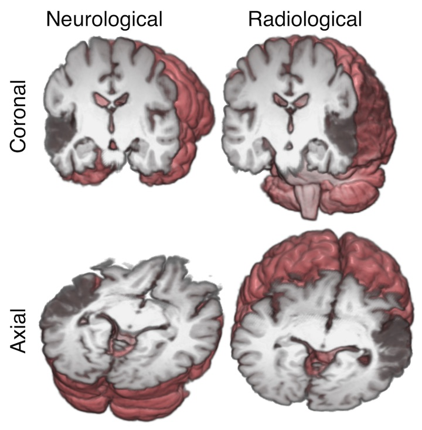

Radiological vs neurological conventions#
It is relatively common to talk about images being in “radiological” compared to “neurological” convention, but the terms can be used in different and confusing ways.
See Coordinate systems and affines for background on voxel space, reference space and affines.
Neurological and radiological display convention#
Radiologists like looking at their images with the patient’s left on the right of the image. If they are looking at a brain image, it is as if they were looking at the brain slice from the point of view of the patient’s feet. Neurologists like looking at brain images with the patient’s right on the right of the image. This perspective is as if the neurologist is looking at the slice from the top of the patient’s head. The convention is one of image display. The image can have any voxel arrangement on disk or memory, and any output reference space; it is only necessary for the software displaying the image to know the reference space and the (probably affine) mapping between voxel space and reference space; then the software can work out which voxels are on the left or right of the subject and flip the images to the taste of the viewer. We could unpack these uses as neurological display convention and radiological display convention.
Here is a very nice graphic by Chris Rorden showing these display conventions, where the 3D rendering behind the sections shows the directions that the neurologist and radiologist are thinking of:

In the image above, the subject has a stroke in left temporal lobe, causing a dark area on the MRI.
Alignment of world and voxel axes#
As we will see in the next section, radiological and neurological are sometimes used to refer to particular alignments of the voxel input axes to scanner RAS+ output axes. If we look at the affine mapping between voxel space and scanner RAS+, we may find that moving along the first voxel axis by one unit results in a equivalent scanner RAS+ movement that is mainly left to right. This can happen with a diagonal 3x3 part of the affine mapping to scanner RAS+ (see Coordinate systems and affines):
>>> import numpy as np
>>> from nibabel.affines import apply_affine
>>> diag_affine = np.array([[3., 0, 0, 0],
... [0, 3., 0, 0],
... [0, 0, 4.5, 0],
... [0, 0, 0, 1]])
>>> ijk = [1, 0, 0] # moving one unit on the first voxel axis
>>> apply_affine(diag_affine, ijk)
array([3., 0., 0.])
In this case the voxel axes are aligned to the output axes, in the sense that moving in a positive direction on the first voxel axis results in increasing values on the “R+” output axis, and similarly for the second voxel axis with output “A+” and the third voxel axis with output “S+”.
Some people therefore refer to this alignment of voxel and RAS+ axes as RAS voxel axes.
Neurological / radiological voxel layout#
Very confusingly, some people refer to images with RAS voxel axes as having
“neurological” voxel layout. This is because the simplest way to display
slices from this voxel array will result in the left of the subject appearing
towards the left hand side of the screen and therefore neurological display
convention. If we take a slice \(k\) over the third axis of the image data array
(img_data[:, :, k]), the resulting slice will have a first array axis
going from left to right in terms of spatial position and the second array
axis going from posterior to anterior. If we display this image with the
first axis going from left to right on screen and the second from bottom to
top, it will have the subject’s right towards the right of the screen, and
anterior towards the top of the screen, as neurologists like it. Here we are
showing the middle slice of an image with RAS voxel axes:
>>> import nibabel as nib
>>> import matplotlib.pyplot as plt
>>> img = nib.load('downloads/someones_anatomy.nii.gz')
>>> # The 3x3 part of the affine is diagonal with all +ve values
>>> img.affine
array([[ 2.75, 0. , 0. , -78. ],
[ 0. , 2.75, 0. , -91. ],
[ 0. , 0. , 2.75, -91. ],
[ 0. , 0. , 0. , 1. ]])
>>> img_data = img.get_fdata()
>>> a_slice = img_data[:, :, 28]
>>> # Need transpose to put first axis left-right, second bottom-top
>>> plt.imshow(a_slice.T, cmap="gray", origin="lower")

{kind=link}
{kind=link}

{kind=link}
{kind=link}
This slice does have the voxels from the right of isocenter towards the right of the screen, neurology style.
Similarly, an “LAS” alignment of voxel axes to RAS+ axes would result in an image with the left of the subject towards the right of the screen, as radiologists like it. “LAS” voxel axes can also be called “radiological” voxel layout for this reason [1].
Over time it has become more common for the scanner to generate images with almost any orientation of the voxel axes relative to the reference axes. Maybe for this reason, the terms “radiological” and “neurological” are less commonly used as applied to voxel layout. We nipyers try to avoid the terms neurological or radiological for voxel layout because they can make it harder to separate the idea of voxel and reference space axes and the affine as a mapping between them.
Footnotes